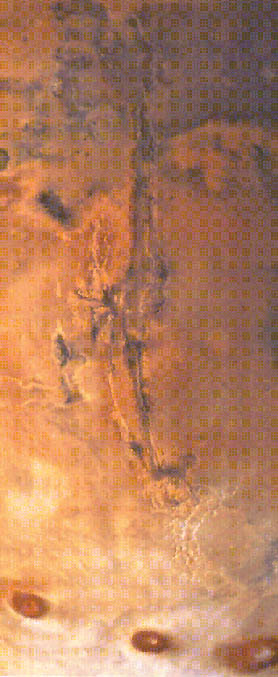

Valles Marinerus on Mars

| A great rift of the surface of Mars extends nearly a quarter of the way around the planet. The series of canyons is called Valles Marinerus after Mariner 9 which first revealed them to us. This great crack of the crust extends about 5000 km along the slopes of the Tharsis bulge. The main canyon is about 7 km deep and up to 100 km wide. |
|
Index
Mars Concepts
Solar System Illustration
Solar System Concepts
Reference
Fraknoi, Morrison, Wolff
Ch 9 |